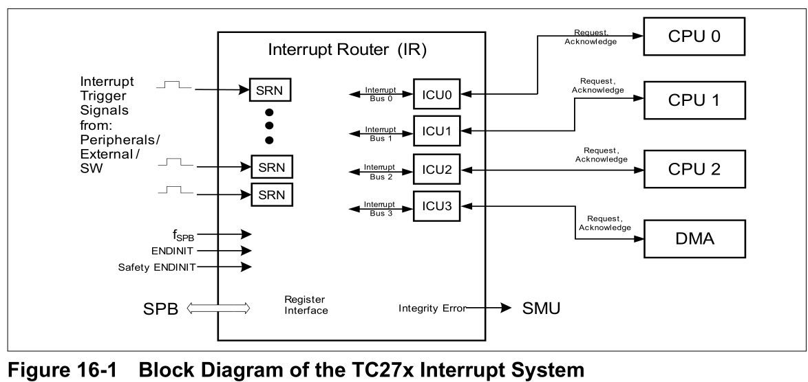
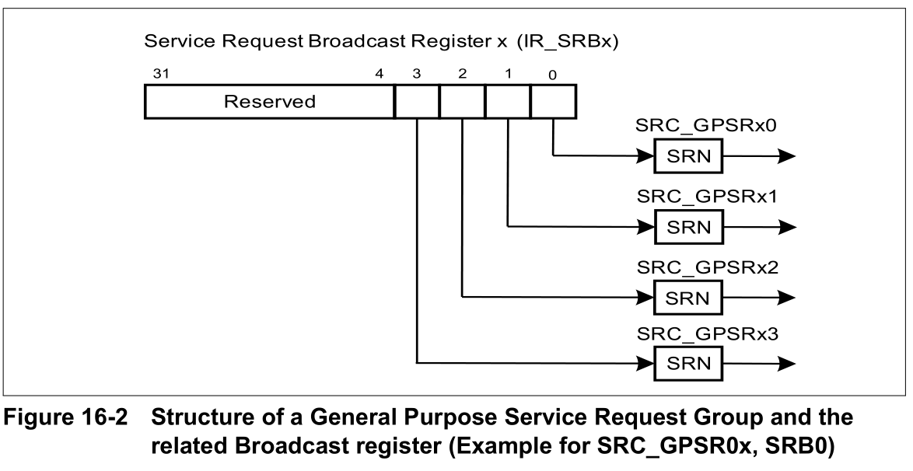
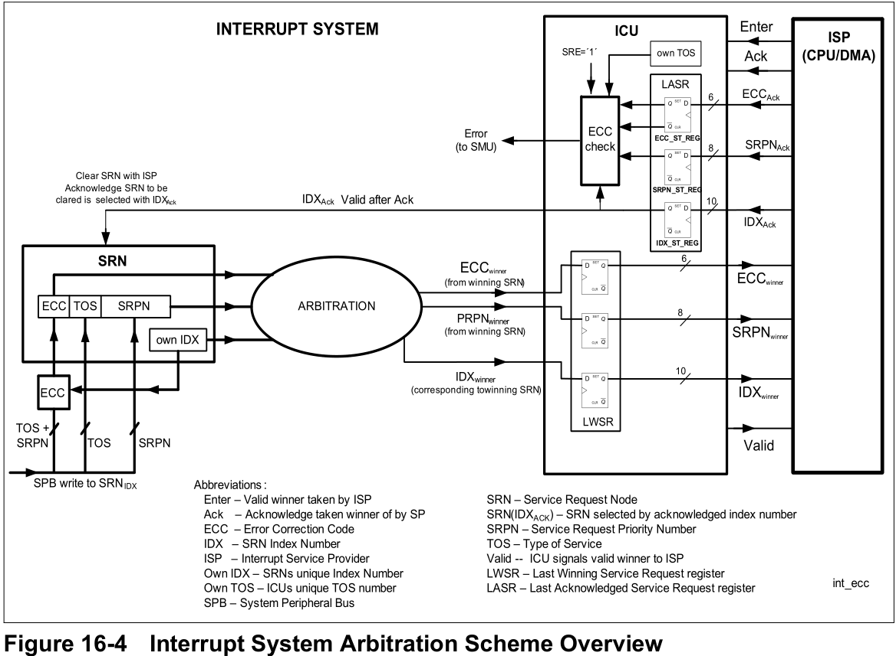
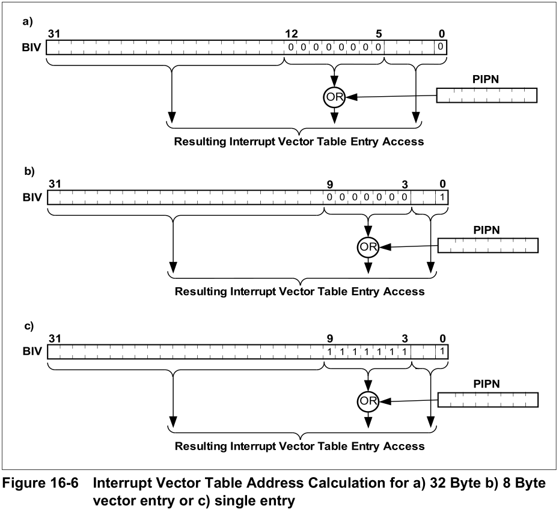
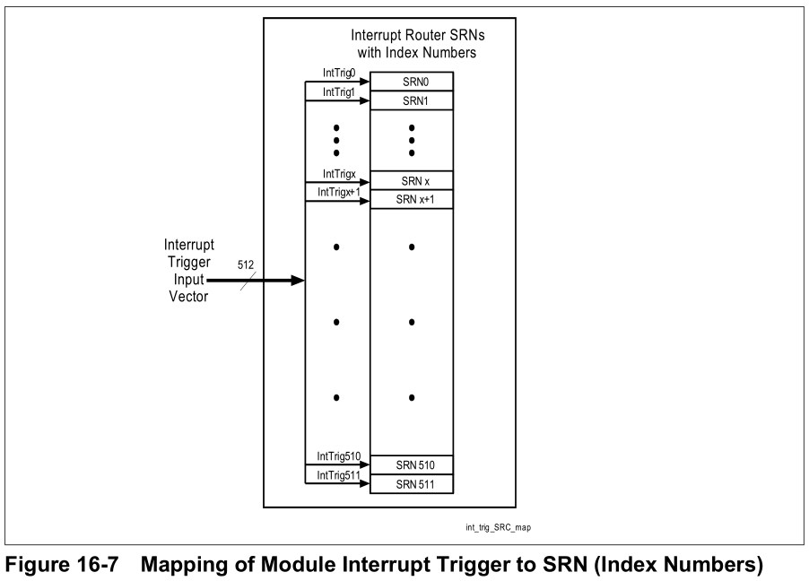
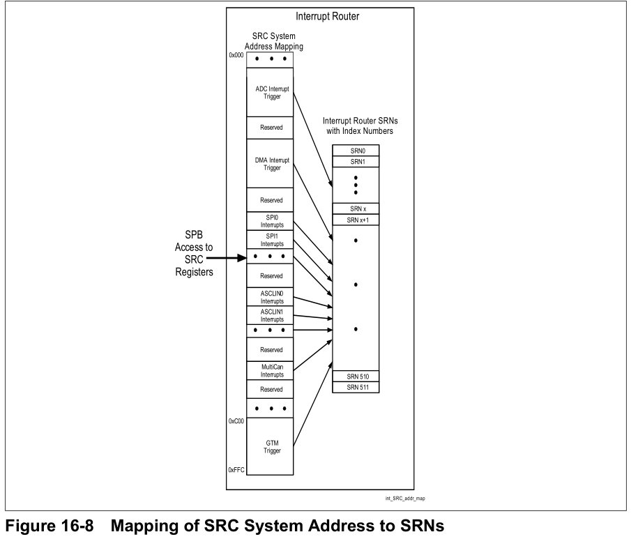
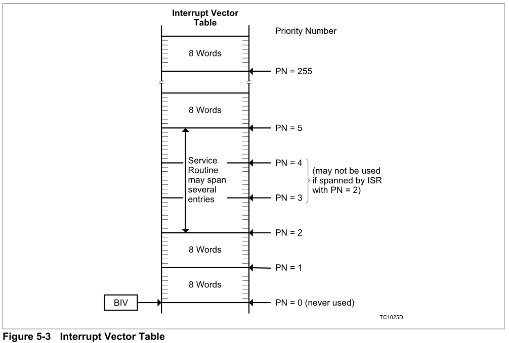

中断路由
中断路由调度由外部，内部和软件引发的到CPU和DMA的中断请求。
中断请求可以由CPU和DMA提供中断服务。在这里统一称中断请求为服务请求。
TC275中的中断系统在中断路由模块中实现，该模块包括服务请求节点（SRN），中断控制单（ICU）以及用于软件开发支持的其它功能。
在图16-1中,每个可生成服务请求的TC27X模块都链接到中断路由模块中的一个或多个服务请求节点（SRN）。中断路由还包括几个通用服务请求节点。可用于软件（SW）触发的服务请求。
每个SRN都包含一个服务请求控制寄存器（SRC），用于配置有关例如优先级的服务请求，并映射到中断服务提供者（CPU或DMA）。
每个SRN连接到中断路由器模块中的所有ICU，其中SRN的控制寄存器设置定义了目标服务提供者和服务请求的优先级。每个ICU处理来自映射到ICU的SRN的竞争服务请求之间的中断仲裁。
每个ICU连接到一个服务提供者（CPU或DMA模块），在该服务提供者中，ICU提供仲裁回合的有效命中服务请求/ SRN，并且服务提供者向ICU回传在何时以及正在处理哪个服务请求时的信号。

特点
- 中断系统最多支持512/1024个服务请求
- 每个ICU最多支持255个服务请求优先级1个）/服务提供者
- 最多支持16个ICU /服务提供者
- 每个CPU和DMA模块均带有专用ICU
- 独立于其他ICU的ICU服务请求仲裁
- 低延迟仲裁-三个/四个时钟2），从收到服务请求到将其发送给服务提供者
- 每个服务请求都有专用的服务请求节点（SRN）
- 每个SRN具有可编程的8位优先级向量1）
- 每个SRN都可以映射到已实现的ICU /服务提供者之一
- 在配置的服务提供者确认中断后，硬件会自动清除SRN
- 中断系统完整性支持
- 每个CPU四个通用服务请求（GPSR）可用作软件中断（未分配给外围设备或外部中断）
- 向多个服务提供者同时发出通用服务请求（软件中断）信号的机制（服务请求广播寄存器，SRB）
- 服务请求的优先级依赖屏蔽（对于CPU，CPU中包含的相关控制寄存器）
- 具有滤波器模式和触发模式的外部中断（例如下降沿，上升沿，高电平或低电平）。可以在运行时配置模式
- CPU唤醒支持（如果CPUx处于IDLE状态，则向SCU发送对CPUx的服务请求信号以唤醒CPUx）
服务请求节点
中断路由器模块内的每个服务请求节点（SRN）均包含一个服务请求控制（SRC）寄存器和接口逻辑，该寄存器将其连接至中断路由器模块外部的触发单元以及中断路由器内部的中断仲裁总线（见：图16-1 ）
服务请求控制寄存器
中断路由器模块中的所有服务请求控制寄存器都具有相同的格式。通常，这些寄存器包含：
- 启用/禁用信息
- 服务请求设置位和服务请求清除位
- 服务请求优先级向量（8位）
- 服务提供商的目的地
- 服务请求状态位
- 软件启动的服务请求设置和重置位
- 完整性错误已发送至安全监控单元（SMU）
- 中断粘滞和溢出位
除了由相关的触发单元通过硬件激活之外，每个SRN还可以通过两个软件启动的服务请求控制位由软件设置或重置。
本章中的描述描述了TC27x的所有服务请求控制寄存器。在模块章节的相应部分中提供了有关外围模块中断功能的信息，例如使能或请求标志。（略）
值得注意的几个位是中断服务提供者TOS，中断使能标志SRE，中断优先级编号SRPN。
中断请求优先级编号（SRPN）
对于中断服务提供者是一个CPU：
ISR通过每个CPU中的中断向量表与服务请求优先级编号相关联。这意味着CPU中断向量表按优先级顺序排序。这不同于传统的中断CPU体系结构，在传统的中断CPU体系结构中，其中断向量表由中断源排序。CPU中断向量表允许单个外设具有用于不同目的的多个优先级。
注意：对于CPU，SRPN值为0000 H是一个特殊值，并且不得用于映射到CPU的服务请求。
注意：TC1.6E和TC1.6P CPU提供了灵活的中断表对齐方式，配置了8字节或32字节的向量间隔。请 另请参见“CPU”一章。
对于中断服务提供者是DMA：
完整的SRPN编号用于DMA模块的服务请求仲裁。在模块内，DMA通道通过SRPN的SRPN LSB与服务请求优先级编号相关联。
仅SRPN编号0 … max_channel_number将导致相关DMA通道的触发。SRPN编号> max_channel编号不会导致DMA通道触发或任何其他信号。
例子：
- 对于16通道DMA模块，SRPN号OOH将触发通道0，07H将触发通道7。所有SRPN> 0FH都不会导致通道触发。
- 对于64通道DMA模块，SRPN编号00H将触发通道0，17H将触发通道23和3FH。将触发通道64。所有SRPN> 3FH都不会导致通道触发。
中断控制单元ICU
中断路由器模块每个服务提供商（CPU和DMA模块）包括一个ICU，其中每个ICU与一个服务提供商相关。可以通过SRN SRCx.TOS寄存器位字段将SRN映射到ICU之一（见：图16-1 ）。
中断控制单元（ICU）：
- 管理来自映射到ICU的SRN的竞争服务请求之间的仲裁
- 向服务提供商提供仲裁回合的胜者
- 从服务提供商接收接受了哪个服务请求的信息
- 检查接受的服务请求信息（ECC检查）
- 将完整性错误通知安全监视单元（SMU）
- 管理清除相关SRN中已确认的服务请求
注意：在当前实现中，ECC代码仅用于错误检测。检测到的错误会报告给SMU，但不会纠正。
ICU控制寄存器
每个ICU包含两个控制寄存器：
- 最新的中标服务请求寄存器（LWSR）提供有关上一服务请求仲裁回合的中标者的信息
- 上次确认的服务请求寄存器（LASR）提供有关服务提供者接受的上一个服务请求的信息
LWSR
LWSR存储了最后一次命中的中断服务请求信息。
STAT：指定LWSR是否有效，即是否有命中的叫断服务请求
PN：优先级
ID：SRN的ID
LASR
LASR存储了最后一次确认的中断服务请求，除没有STAT外与LWSR一致。
错误捕获寄存器（ECR）
当ICU检测到ECC错误时，错误捕获寄存器将捕获最后确认服务请求（LASR）寄存器的内容。ECR始终显示检测到ECC错误的最后一个ECR内容。软件可以通过写入ECR清除ECR内容。错误状态（STAT）和错误溢出（EOV）位可用作错误处理机制，并指示错误信息丢失了。
如果SW清除了ECR.EOV，则必须与ECR.STAT一起清除ECR.EOV。如果在与ECR.EOV并行的同时检测到新错误，则清除ECR.STAT时由硬件再次设置ECR.EOV。
注意：在当前实现中，ECC代码仅用于错误检测。检测到的错误会报告给SMU，但不会纠正。
通用服务请求，服务请求广播
中断路由器模块提供了多组通用服务请求（GPSR），以及一种通过软件并行触发GPSR组的多个服务请求的机制。GPSR可用作软件中断。

通用服务请求（GPSRxy）
中断路由器模块提供多组通用服务请求：
- 每个通用服务请求组都包含四个可用作软件中断的服务请求节点
- 通用服务请求可以通过相关的服务请求控制寄存器SRC_GPSRxy 进行配置和控制。
- GPSR未映射到模块服务请求触发器，因此只能用于软件触发器
- 通用服务请求xy只能通过将T写入相关的SRC_GPSRxy.SETR 位或将1写入相关的服务请求广播寄存器位SRBx[y] 来触发。
服务请求广播寄存器（SRBx）
每个通用服务请求组（GPSRxy）都实现了一个服务请求广播寄存器（SRBx）4））。
服务请求广播寄存器x可用于并行触发SRC_GPSRx 1 ）组内的多个服务请求。
- SRBx始终读为0
- 将1写入SRBx[y]会触发服务请求GPXRxy（y = 3：0）
- 将1写入SRBx[31：4]无效。
系统寄存器
系统寄存器包括了时钟CLC，寄存器访问保护（ACCEN1/0）等。
仲裁程序
中断模块中的每个ICU都有自己的中断总线。通过经由SRC.TOS位字段设置将每个服务请求节点（SRN）映射到相关的ICU /中断总线，可以将其定向到一个服务提供者。

对于第一个未决服务请求，中断总线正在启动第一个仲裁过程。只要至少一个服务请求未决，就重复在一个中断总线上进行仲裁过程。相关的中断控制单元提供赢得了最后仲裁程序的服务请求。
这意味着：当ICU向服务提供商提供服务请求，并且有更高优先级的新服务请求进入时，ICU将在下一个仲裁过程之后提供新服务请求。
TC27x中实现的仲裁过程使用3个系统外设总线时钟周期来确定优先级最高的待决服务请求SRPN。实现的确切编号在“模块实现”一章中进行了描述。
在仲裁过程中，中断总线比较所有未决服务请求节点的SRC.SRPN位字段，这些位通过SRC.TOS设置映射到此中断总线。
在仲裁过程中，优先级最高的挂起服务请求被标识为获胜者，相关的SRN服务请求控制寄存器位字段值SRPN，ECC和SRN的索引将提供给ICU。ICU将这些（SRPN，ECC，SRN索引）提供给服务提供商。当ICU通过确认从服务提供商处获取这些信息时，会进行ECC检查。ECC检查使用接收到的值完成：ECC，SRPN，SRN索引号，假定为1的SRE位（启用SRN）和ICU的TOS编号。
中断路由器模块将检测到的错误通知安全管理单元（SMU中的一位，覆盖所有SRN和ICU的错误）。
注意：在当前实现中，ECC代码仅用于错误检测。检测到的错误会报告给SMU，但不会纠正。
仲裁过程略。
TC27X中断系统的使用
以下各节简要介绍了到中断路由器ICU的服务提供商接口。
注意：中断路由器中的所有ICU子模块都具有相同的功能。
CPU到ICU的接口
每个CPU具有一个接口，该接口连接到中断路由器模块的一个ICU。CPU ICU接口由一个寄存器集组成，该寄存器集负责接管ICU提供的服务请求信息（SRPN，SRN索引，ECC）。当CPU确认提供的服务请求时，这些信息将发送回ICU。
CPU ICU接口包含一个中断控制寄存器（ICR），该寄存器保存当前的CPU优先级号（CCPN），全局中断允许/禁止位（IE）和未决的中断优先级号（PIPN）。有关CPU ICU接口和CPU中断处理的更多详细信息，请参见“CPU”一章。
DMA到ICU的接口
DMA模块具有一个接口，该接口连接到中断路由器模块的一个ICU。
DMA接管ICU的服务请求信息，在内部触发寻址的信道，并立即将其确认给ICU，在此清除相关的SRN。
DMA到ICU的接口由一个寄存器集组成，该寄存器集负责接管ICU提供的服务请求信息（SRPN，SRN索引，ECC）。DMA在下一个时钟周期将它们发送回ICU，并进行确认。
DMA通道优先级方案与中断系统的方案相同：较高的SRPN编号->较高的服务请求优先级，较高的DMA通道编号-> DMA通道的较高优先级，其中通道0在DMA中的优先级最低。
软件引发的中断
软件可以通过写入其服务请求控制寄存器来设置任何SRN中的服务请求位（SRR）。因此，软件可以发起由与硬件发起的服务请求相同的机制处理的服务请求。
在SRN中将SRR位置1之后，就无法在软件启动的服务请求和硬件启动的服务请求之间进行区分。因此，软件应仅使用未用于硬件启动的服务请求的SRN和中断优先级编号。
TC27x每个CPU包含一组通用服务请求SRN，这些SRN支持软件启动的中断。每个已实现的TriCore CPU一组，每组包括四个SRN。这些SRN未连接到内部或外部硬件触发信号，只能用作软件中断/软件启动的服务请求。这些SRN称为通用服务请求节点（SRC_GPSRxy，x =组号，y = 0-3）。
另外，可以使用任何其他未使用的SRN来生成软件中断。
外部中断
保留了四个SRN（lnt_SCUSRC [3：0]）来处理外部中断。能够产生中断请求的外部GPIO端口输入信号（边沿/电平触发，门控等）的设置在外部请求单元（ERU）中进行控制。在SCU章节中详细介绍了ERU功能。
用例示例
本节显示了中断系统的用例和OTGS的用例。
中断处理程序示例
当TriCore接受中断时，中断向量表的入口地址由基本中断向量表指针TriCore寄存器BIV和该中断的优先级编号（PIPN）计算。TriCore TC1.6P和TC1.6E架构提供了将每个条目的向量间距配置为32字节（请参见下图a（图16-6 ）或8字节（请参见下图b（图16-6 ））的可能性。作为第三种选择，可以通过屏蔽PIPN将向量表简化为单个条目（请参见下图c（图16-6 ））。

通过命令把中断向量表写入BIV（Base Interrupt Vector Table Pointer）中（这里是c的写入）
__mtcr(BIV,0x80000001 | 0xFF<<3); // move to core register BIV |
初始化和安装中断的步骤描述：
- （第1行）定义ISR指针数组。最高 可能有255个中断。
- （第2行）定义指向isr_pointer_array起点的指针。
- （第3行）开始执行函数interruptHandlerInstall。该函数将中断安装在数组中。必要的信息是中断优先级和ISR入口地址。
- （第4行）此行将ISR条目地址存储在阵列中。
- （第5和6行）此函数分支到特定的中断例程，并在中断发生后立即被调用。
- （第7行）在处理完ISR之后，此行给出了return命令。
初始化和安装中断的C代码示例：
- （1）void（* isr_pointer_array [256]）（void）;
- （2）void（** isr）（void）= isr_pointer_array;
- （3）void interruptHandlerInstall（long int SRprio，long int addr）{
- （4）* isr_pointer_array [SRprio] = addr;
} - （5）void interruptHandler（void）{
- （6）isr [__ mfcr（ICR）＆0xFF]（）;
- （7）asm（“ rfe”）; //从事件返回
中断入口地址存储在数据数组中，而不是将值编码到指令中。函数interruptHandlerInstall可以在该数组中组织中断的安装（请参见模块中此中断处理程序的应用，例如STM章中的用例示例）。这种向量表生成有时提供比8字节配置更灵活的方式，并且不需要对中断的任何特定编译器支持。
注意：在中断发生之前，必须全局启用中断系统。中断控制寄存器（ICR）保留全局中断使能位（ICR.IE）启用CPU服务请求系统。大多数编译器支持该属性（或类似属性）：
_enable（）;
设置此位。（有关更多详细信息，另请参见《体系结构手册》）
模块实现
TC27x模块服务请求触发器到SRN的映射
所有TC27x模块服务请求都映射到中断路由器中的一个服务请求节点。
每个SRN在中断路由器模块中都有一个唯一的SRN索引号。
中断路由器模块具有一个511/1024中断触发输入向量，其中中断触发输入向量位[x]与SRN的序号为x的SRN相关。这意味着中断触发输入向量位[x]上的触发脉冲将触发SRN [x]。

服务请求控制寄存器的映射
与一个模块实例相关的SRC寄存器的地址在整个AURIX系列中都是相同的（例如SPI0的中断）。
每个SRN在中断路由器模块中都有一个唯一的SRN索引号。
每个AURIX设备的已实现SRN的数量与设备功能集相匹配。中断路由器模块中的所有SRN都有连续的索引号（例如：如果实现256个SRN，则索引号为0-255）。每个SRN在中断路由器模块中都有一个唯一的SRN索引号。
例：
在具有许多模块/模块实例的高端设备中，SPI0中断可能被映射到索引号为180至185的SRN，可以通过地址偏移量0x2F0至0x2F5访问相关的SRC。
为了满足这两个要求（所有AURIX设备中与SPI0相关的SRC的地址相同，但在具有连续索引号的小型系列设备中减少SRN的数量），中断路由器模块包括一个地址映射外壳（图16-8 ）。例如上述例子中的SPI0的固定SRC地址重新映射到所述中断路由器模块中的SRN。

与调试复位有关的中断
为了进行软件调试，AURIX设备需要一些仅与“调试重置”相关的服务请求节点。在非调试复位（例如，应用程序复位）的情况下，这些SRN会保留其SRC寄存器内容和未决服务请求状态。与其他与调试重置相关的调试逻辑（例如，断点逻辑）结合使用，这可使客户SW调试导致应用程序重置以及在应用程序重置之后的情况。
服务请求触发信号的定时特性
中断路由器以系统外围总线（SPB）时钟为时钟
TC27x模块中断/服务请求触发信号向IR的规则：
- 触发信号必须与SPB时钟同步
- IR触发输入对边沿敏感（正时钟边沿）
- 最小触发信号脉冲。一个SPB时钟周期的高长度，高脉冲长度可以> 1个SPB时钟周期
- 调试相关的触发信号脉冲应由相关的TC27x模块保持高电平，直到处理了触发为止
中断路由器系统和模块寄存器
硬件中断的实现
上面都是手册上理论的东西，我们要自己实现软件中断和硬件中断应该怎么办呢？
TC275支持255个优先级，每个优先级即为对应的中断向量号。
0优先级的中断不使用。
首先是BIV(Base Interrupt Vector Table Pointer)寄存器中存储了中断向量表的起始地址。BIV寄存器中的VSS(Vector Spacing Select)位指定了BIV和ICR寄存器中PIPN位中断优先级计算中断向量表偏移的方法。
if(BIV.VSS == 0) |
同时，根据上面公式也可以反推出中断向量表中每个中断处理函数的空间分别为32字节和8字节。可以把PIPN分别设为0和1进行测试，刚好是32字节和8字节的偏移。
即和下图一致：

所有的中断处理函数都需要在这32字节或8字节中完成。
我们也可以手动设置BIV[5:12]或者BIV[3:9]的值来灵活处理每一个优先级中断的入口地址，例如ILLD中使用的软件中断就把所有优先级的入口地址都定位到了第255优先级的入口地址。
了解了BIV到中断处理函数的转换和中断处理函数的大小，就可以配置和生成中断向量表。
HIGHTEC硬件中断的示例：
先定义中断服务函数的结构体
typedef struct IntIsr_tag |
在HIGHTEC编译器中，中断向量表是由下面的代码定义和生成的
/* section .inttab start */ |
上面的代码把每一个中断向量都定义在了输入节.hwtab中，并且定义了中断向量表的起始地址TriCore_int_table，使用这个地址初始化BIV。
初始化BIV
/* 由于上面的中断向量表代码会编译到输入节.hwtab中，其它的函数代码要链接到.text代码节中，这里又开始代码节 */ |
现在BIV的地址指向了TriCore_int_table，根据引起中断的优先级，就可以计算出中断向量的起始地址，在这个地址执行中断服务函数。
定义中断服务函数安装函数
/** |
到此为止，整个中断向量表都初始化完成了。接下来就是要设置对应的服务请求节点来响应中断。
int reload_value = 100000; /* 随便一个测试值 */ |
在SRC相关的寄存器中，设置优先级SRPN，中断服务提供者TOS，和中断使能开关SRE，即可等待信号触发中断。
以上就是HIGHTEC示例代码的硬件中断实现方式。
iLLD硬件中断实现方式
iLLD把中断向量表的每一个中断向量都在链接文件中定义了一个输入和输出节
.inttab_tc0_000 (LCF_INTVEC0_START + 0x0) : { . = ALIGN(8) ; KEEP (*(.intvec_tc0_0)); } > pfls0 |
一共255个中断向量。
中断服务代码是在输入节.intvec_tc0_000到.intvec_tc0_255中定义的。代码在CompilerGnuc.h中
|
在Ifx_Irq.h中定义了优先级255的中断响应函数
IFX_INTERRUPT_INTERNAL(IfxCpu_Irq_intVecTable, 0, 255) |
这段代码展开为
.pushsection .intvec_tc0_255, "ax", @progbits |
定义了输入节.__intvec_tc0_255，同时也定义了中断的服务函数。依照优先级255的定义方式即可定义其它优先级的中断服务函数。
最后在启动函数_Core0_start中注册BIV
__mtcr(CPU_BIV, (uint32)__INTTAB(0)); |
__INTTAB(0)展开为__INTTAB_CPU0。
到此iLLD的硬件中断就实现了。
iLLD的软件中断实现
iLLD的软件中断和硬件中断一样，只是在注册BIV的时候，使用了下面的地址
/*Wrapper macros for the tool specific definitions */ |
可以看到，如果定义了软件中断IFX_USE_SW_MANAGED_INT这个宏，__INTTAB(0)展开就是地址0x800F1FE0,刚好为优先级255的中断向量的地址，没有定义就是0x800F0000，为优先级为0的中断向量地址，也即上面的硬件中断的地址。
软件中断中BIV的值就是0x800F1FE0，根据BIV到中断向量地址的转换公式
addr = ( BIV | (ICR.PIPN << 5) ); //每次入口移动32字节 |
不管优先级是多少，使用0x800F1FE0这个地址进行计算，都得到0x800F1FE0这个地址，即优先级0-255的中断，全都指向优先级255的中断向量，最终都进入了IfxCpu_Irq_intVecTable这个服务函数中，再在这个函数中使用ICR.CCPN优先级分发到不同的服务函数中。
void IfxCpu_Irq_installInterruptHandler(void *isrFuncPointer, uint32 serviceReqPrioNumber) |
到这里，iLLD的软件中断也实现了。